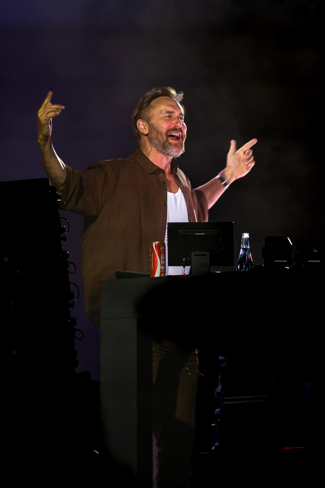
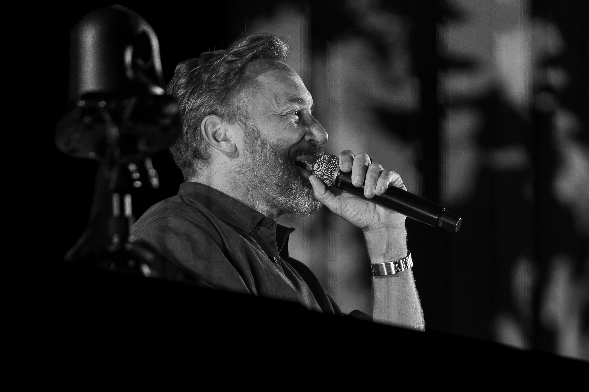

French DJ and producer David Guetta brought "The Monolith" to Parque Papa Francisco in Loures on Sunday 2 August 2026, promoted locally by Sodade as the most ambitious show of his career. The production is built around a central LED structure that doubles as stage and main visual element, with 3D mapping, synchronised visual content and choreographed lighting design running throughout the set.

Photo: Luan Chepernate / Image Media
The Loures date is one stop on the wider Monolith Tour, which has also brought artists including Armin van Buuren, Fisher and Black Coffee to other cities. No attendance figures had been published at the time of writing.
2 August 2026 · Parque Papa Francisco, Loures · "The Monolith" Tour

Photo: Luan Chepernate / Image Media
This date was covered for Image Media by correspondent Luan Chepernate rather than the full team.